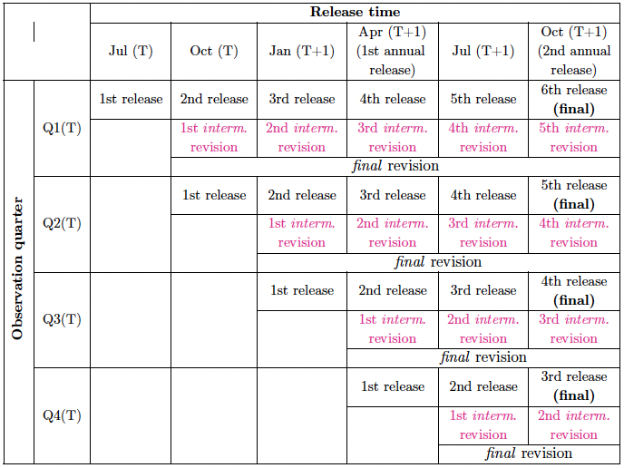
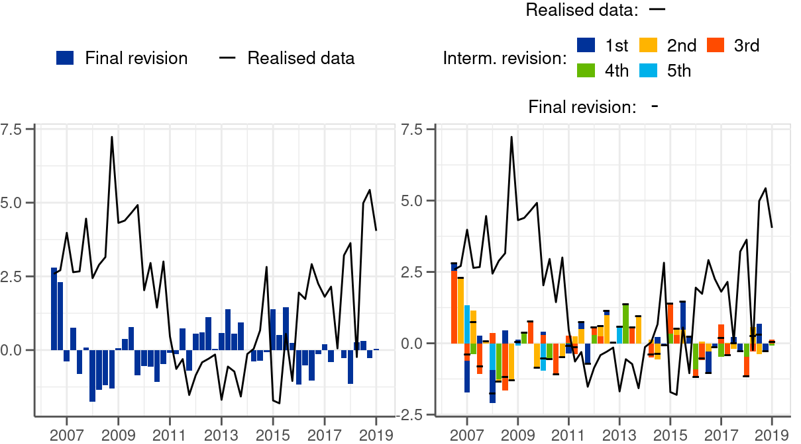
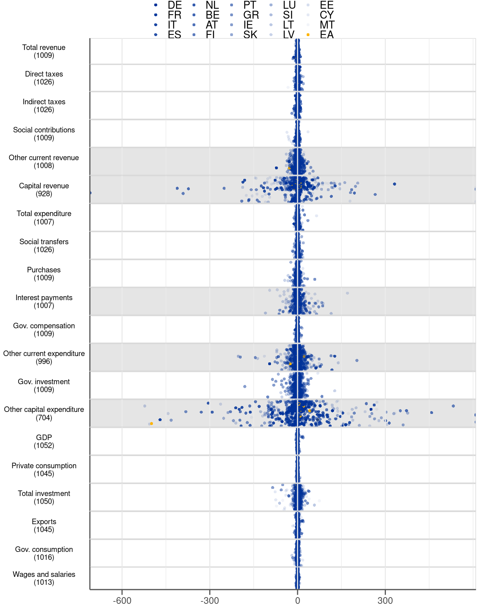
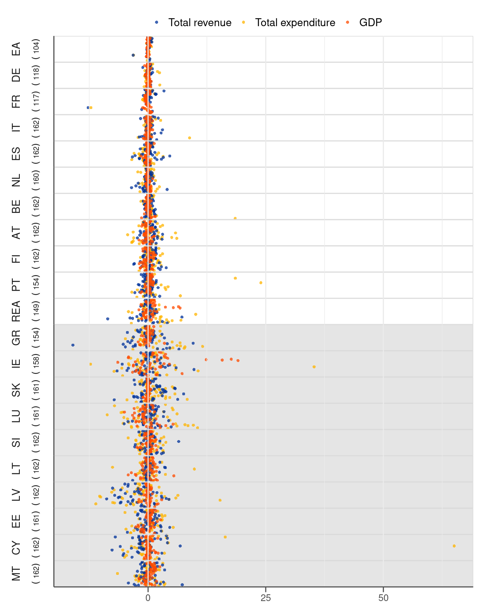
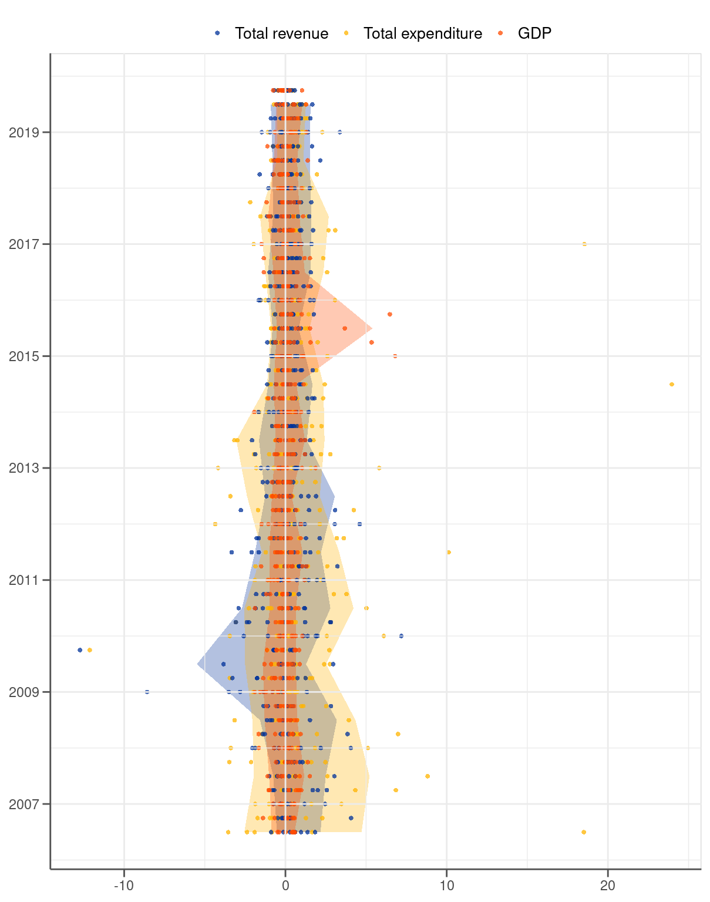

|  |
2 Real-time quarterly fiscal dataset
Fundamental to our analysis is the construction of a real-time quarterly fiscal dataset, which will serve as a basis for calculating the revisions. The dataset primarily relies on quarterly Government Finance Statistics (GFS) published by Eurostat.1 GFS data provide information on economic activities of governments in a harmonised and country-comparable manner.2 3 While the data spreads over both non-financial (i.e. revenue and expenditure) and financial (i.e. borrowing and lending) activities of the governments in the paper we only cover the former.
1 A section dedicated to government finance statistics is available on Eurostat’s website (https://ec.europa.eu/eurostat/web/government-finance-statistics).
2 European GFS are conceptually consistent with the European system of national and regional accounts in the European Union (referred to as ESA 2010). In fact, the GFS compilation is based on re-arranging transactions recorded in the various ESA accounts that are relevant for the government sector.
3 In addition to the ESA 2010 accounting framework published in the Official Journal on 26 June 2013 (https://ec.europa.eu/eurostat/web/products-manuals-and-guidelines/-/KS-02-13-269) and implemented in September 2014, Eurostat publishes the Manual on Government Deficit and Debt — ESA Implementation (the latest 2019 edition: https://ec.europa.eu/eurostat/documents/3859598/10042108/KS-GQ-19-007-EN-N.pdf/5d6fc8f4-58e3-4354-acd3-a29a66f2e00c). The manual constitutes a complement to ESA 2010 by providing specific guidance on the treatment of statistical issues regarding government finance statistics.
In addition, the dataset is supplemented with a limited set of variables from Main National Accounts (MNA) dataset, which are labelled as ‘macro variables’. They are used as a reference to assess the relative properties of the fiscal revisions. The MNA vintages take due consideration of the timing of the GFS vintages, even if the releases of the two datasets do not coincide. This means that to determine a relevant vintage of the MNA dataset we use only the information available at the time of the corresponding GFS data release.
2.1 Structure of the real-time dataset
The structure of our real-time dataset follows a typical set-up, as presented in Diebold and Rudebusch (1991) and as embedded in ECB’s Statistical Data Warehouse (SDW) (see a demonstration in Table 2.1). Each column represents a data release, which in the case of GFS data takes place four times per year (in January, April, July and October).4 Each row, in turn, represents a quarter for which the economic activity is measured. Data releases for a given quarter can be traced from left to right within the corresponding row. Differences between releases constitute intermediate revisions, which then make up final revisions (i.e. a difference between the final release and the first release).
4 The data for a given quarter are compiled for the first time 90 days after the end of the quarter and are published after validation around 110 days after the end of the quarter.
To define revisions it is necessary to take a stance which release constitutes a final value for a certain quarter. Treating the most recent available observations as final releases may be suboptimal because of benchmark revisions, which take place every several years and lead to revisions of not only the most recent quarters but also remote ones.5 Against this background, the selection of a final value becomes a delicate balancing act between two objectives. On the one hand, there is a desire to incorporate as many releases as possible to reflect any new incoming information since the moment of the initial release. On the other hand, one should limit the number of releases to avoid as much as possible the undesirable contamination of the dataset with benchmark revisions. The notion of a final value in this situation becomes necessarily arbitrary. In addition, it should be recognised that fiscal data even though reported at quarterly frequency carry some characteristics of annual data, which reflects the annual nature of budgeting and reporting in the public sector.
5 Statistical agencies occasionally adjust their methodologies, which leads to revisions of entire time series — the so-called benchmark revisions. In the European Union a harmonised European revision policy was put in place to ensure coordinated and consistent revisions (see Eurostat (2019)). According to this policy, benchmark revisions should take place each five years, with implementation years ending with ‘4’ and ‘9’. Consequently, benchmark revisions for ESA 2010, which govern both GFS and MNA, were supposed to be implemented in 2014 (at the time of the ESA 2010 introduction) and 5 years later in 2019. In practice, however, not all countries followed the recommendations. Some Member States carried out benchmark revisions outside the benchmark years — before, after or even each year including during the benchmark years. The lack of regularity makes controlling for benchmark revisions in practice extremely challenging.
In this paper we define the final value for any quarter of year T by the value released in October of the subsequent year T+1. The main motivation for our choice is to duly recognise that quarterly fiscal data are, at least to some degree, annual in nature. As documented in Chapter 5, quarterly fiscal figures are revised mainly at the time of annual data releases (i.e. in April and October). In this context, we regard as final values the outcomes of the second annual EDP (Excessive deficit procedure) release.6 At the same time, by keeping a limited distance between a first and a final release we make the dataset as much as possible unaffected by benchmark revisions.
6 As a part of the Excessive deficit procedure all EU member states are obliged to report their annual fiscal outturns before 1 April and 1 October each year.
The set-up implies that different quarters within a year have a varying number of releases before the final value is determined (see Table 2.1). Q1 figures require six releases until they become final while Q4 only three. In other words, while for Q1 observations it takes 1 1/4 years to determine its final values it lasts only 1/2 year for Q4 observations. The property equally applies to all variables considered in the analysis therefore it does not affect comparability between them in any way.
To analyse the revisions we transform the GFS data, expressed in EUR millions, into growth rates.7 In particular, we calculate annual growth rates with respect to the same quarter of a preceding year. By calculating this way, rather than with respect to a preceding quarter, we avoid a need for seasonal adjustment, which in the presence of updates to seasonal factors would add another source of revisions. Also, considering growth rates makes the analysis more robust to benchmark revisions than it would be the case for levels. Benchmark revisions often lead to level shift adjustments of all quarters, even those reaching far into the past, but leave the growth profile still largely unaffected. The average growth for most of the fiscal and macro series in the sample oscillates around 4% (see Figure B.2 in Appendix B of the online appendix).
7 To be precise, we approximate growth rates by log differences. The approximation leaves ordinary changes over time largely unaffected. However, it diminishes extraordinarily huge changes compared to the standard growth rate calculation.
2.2 Final and intermediate revisions
Final revisions are calculated as a difference between the final release (\(x_{t}^{f}\)) for quarter t and the first release (\(x_{t}^{1}\)) for the same quarter \(t\) following the below equation:
\[ r_{t}^{f}=x_{t}^{f}-x_{t}^{1} \]
The definition implies that a positive value is associated with an underestimation of a first release and the other way around (see the left-hand-side chart of Figure 2.1 for illustration).
Intermediate revisions are calculated as a difference between directly succeeding data releases as follows:
\[ r_{t}^{i}=x_{t}^{i+1}-x_{t}^{i} \]
where \(x_{t}^{i}\) is an i-th release for quarter t.
The sum of intermediate revisions to a given quarterly value amounts to a final revision (see Table 2.1 and the right-hand-side chart of Figure 2.1 for illustration). In this context, intermediate revisions can be used to decompose final revisions — the aspect we explore in Chapter 5. The varying distance between final and initial releases results in a different number of intermediate revisions depending on a quarter (see again Table 2.1 for illustration).

2.3 Data scope
Our real-time fiscal dataset contains all main categories provided in the GFS datasest. We look closely at the following 9 fiscal variables.
- Total revenue
- Direct taxes
- Indirect taxes
- Social contributions
- Total expenditure
- Social transfers
- Purchases
- Gov. compensation
- Gov. investment
The set includes total revenue and total expenditure, as well as their main components. Table D.1 in the online appendix gives an overview of all variables together with their full statistical names and with series keys needed to download the data.8
8 Only around 2/3 of the vintages in our real-time fiscal dataset are available through ECB’s SDW. Vintages published before 2010 even though public, have not been disseminated to SDW and they are based on snapshots of Eurostat data releases.
We do not explicitly investigate minor fiscal categories, like capital revenue or subsides, on account of their extraordinary volatility. The only exception we make is government investment, which belongs to our particular interests as an important fiscal policy instrument and as a direct demand component. The excluded variables account only for a limited share of gov. revenue and expenditure, and as such, they are usually unable to drive the general picture on fiscal policy. Concretely, the minor items comprise 10% of total revenue and 7% of total spending in our dataset (see Figure B.1). At the same time, they are very volatile (see standard deviation in Figure B.2) and they come with very large revisions (see Figure 2.2 and Figure A.5, Figure A.6, Figure A.10, Figure A.12, Figure A.14 in the online appendix). Notwithstanding this, the minor variables are captured in the analysis by being a part of total revenue and total expenditure. Consequently, they play a fair role in the analysis even without being considered individually.
The dataset is supplemented with the selected following items from the MNA dataset.9
9 To ensure comparability with fiscal data all macroeconomic variables are expressed in nominal terms, therefore they also contain the price component.
- GDP
- Private consumption
- Total investment
- Export
- Gov. consumption
- Wages and salaries
We regard this set of variables as a reliable benchmark for assessing fiscal revisions. Similarly to the fiscal variables, the series keys needed for data retrieval are specified in the online appendix in Table D.2.

Regarding the country coverage, the dataset underlying the paper includes all 19 countries comprising currently the EMU, as well as the euro area aggregate.10 For the purpose of our analysis, however, we consider individually only 9 biggest (in terms government size as measured by total expenditure) countries. The remaining 10 countries account for only around 5.5% of the euro area government expenditure (see Figure B.3) but exhibit extraordinarily high revisions (see Figure 2.3). Moreover, as can be seen in the single-variable revision plots (Figures A.7 - A.12, there are instances when fiscal data for some of these small countries are not subject to any revisions. Zero revisions in these cases should not support a view about high data accuracy but rather raise concerns regarding the data quality.
10 With the intention of saving space the following country abbreviations are used throughout the paper: BE (Belgium), DE (Germany), EE (Estonia), IE (Ireland), GR (Greece), ES (Spain), FR (France), IT (Italy), CY (Cyprus), LV (Latvia), LT (Lithuania), LU (Luxembourg), MT (Malta), NL (the Netherlands), AT (Austria), PT (Portugal), SI (Slovenia), SK (Slovakia), FI (Finland) and EA (the euro area).
Giving the small and volatile countries a prominent role in forming conclusions on the euro area fiscal data would be misleading. The volatility and incompleteness exhibited by these countries does not influence the big picture on fiscal policy in the euro area simply because of the small size. For this reason we group the small volatile 10 countries into one geographical unit — the rest of the euro area (REA). By doing so we reduce the weight of these countries in the analysis even though we still cover them. In addition, we occasionally look at the euro area aggregate, especially with a view to putting the country fiscal data into perspective.

Our dataset consists of 59 quarterly GFS vintages taking place since January 2007 to July 2021. The selection of the first vintage is dictated by the moment in which quarterly GFS data started being stored in an organised and complete manner.11 Admittedly, it took until October 2014 before the reporting of the GFS data became compulsory and complete. Notwithstanding this, even well before October 2014 the GFS data were published regularly by most of the euro area countries on voluntary basis.12 The last vintage is simply the release containing final values for 2019, which is the last year unaffected by the COVID-19 crisis.
11 The development work on Government Finance Statistics took place since 2002. Only in 2007 the data were considered to be of sufficient quality and complete enough to be used in economic analysis at the ECB.
12 Our fiscal real-time dataset contains some missing values due to data unavailability before October 2014. Most notably, Germany and France published the GFS data only in October once per year rather than on quarterly basis.

A look at the data over time reveals that the dispersion of the fiscal revisions dropped significantly in 2014. Figure 2.4 illustrates that the 5-95% interval calculated for each year narrows down noticeably in 2014 for total revenue and total expenditure. The shrinkage clearly stands out when the two fiscal variables are compared to GDP. The width of the interval for the latter stays remarkably constant over the entire period 2007-19 except for 2015 influenced by the extraordinarily high revisions to Irish GDP. By contrast, the width of the interval for the fiscal series has been exceeding the one of GDP by a wide margin only until 2014. After 2014, however, the bands of the fiscal series become much more aligned compared to GDP. The change could be related to the introduction of ESA 2010 in October 2014 and to the fact that the reporting of the quarterly fiscal data became compulsory at the time. While determining the exact reason is outside the scope of our paper we will bear this fact in mind when analysing the data.